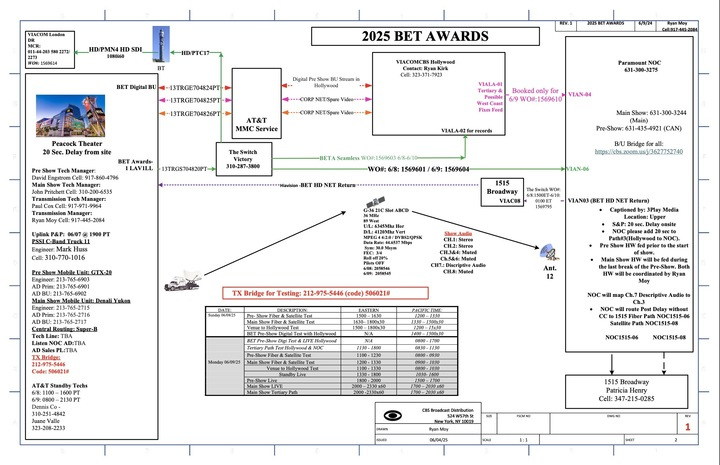

During my time at Paramount, I have been involved in multiple live broadcasting environments, gaining valuable hands-on experience in high-pressure production settings. These opportunities have deepened my understanding of the technical and collaborative aspects of live television production.
The BET Awards is an annual celebration recognizing Black excellence across entertainment, including music, sports, and culture. The 2025 ceremony took place on June 9th and was hosted by actor and comedy icon Kevin Hart. Notable winners included Kendrick Lamar, SZA, and Leon Thomas for their achievements in music, while athletes such as WNBA star Angel Reese and Super Bowl-winning quarterback Jalen Hurts were honored for their impact in sports. The event featured a live pre-show beginning at 6:30 PM EST, followed by the main broadcast from 8:00 PM to approximately 11:30 PM EST. As a Paramount Intern, I had the opportunity to experience the live production environment of this high-profile event and contribute to it. I gained firsthand experience supporting a nationally televised broadcast, enhancing my skills in real-time monitoring, live event coordination, and technical operations. For the BET Awards broadcast, three separate control rooms were utilized: one for the domestic feed, another for international distribution, and a third dedicated to a broadcast for Brazil. I had the opportunity to observe operations across all three, gaining insight into how regional broadcast requirements—such as language, regulations, and timing—impact production workflows. This experience helped me understand the intricacies of broadcast delays and how teams adapt content in real time to meet the needs of different audiences. Additionally, I learned how the live show is structured into segments, with teams continuously monitoring timing to determine whether promotional content should be inserted or removed to maintain the overall runtime and keep the show on schedule. Overall, being part of the BET Awards broadcast environment was an incredible experience that gave me a deeper appreciation for the complexity and precision involved in live television production.
The Kids' Choice Awards (KCA), an iconic annual awards ceremony presented by Nickelodeon, has been a staple in family-friendly entertainment for nearly four decades. Celebrating achievements across television, film, music, and sports, the KCAs are unique in that the winners are chosen entirely by kids through a nationwide voting process—placing the audience at the heart of the show. Known for its vibrant, high-energy atmosphere, the event features colorful sets, playful performances, and interactive segments designed to engage viewers of all ages. A signature tradition of the KCAs is the "sliming" of award recipients—a fun and messy surprise that has become a beloved hallmark of the show. The 2025 ceremony began at 8:00 p.m. EST and concluded at approximately 9:30 p.m., delivering 90 minutes of excitement, laughter, and unforgettable moments.
Similar to my experience with the BET Awards, I had the privilege of contributing to the live broadcast production of this event. As this was the second major show I was involved in, I entered with a stronger foundation and greater confidence. Nevertheless, the experience continued to be a valuable learning opportunity, allowing me to further develop my understanding of live event workflows and broadcast operations. Through this experience, I gained valuable insight into various post-production processes, including how a live show is edited for re-airing. Being part of this environment also enhanced my understanding of high-level problem-solving within the broadcast industry—an essential skill in fast-paced, high-pressure scenarios. One of the most impactful takeaways has been learning how to remain composed and make quick, informed decisions during live events.
Overall, being part of the live broadcast production of the Kids’ Choice Awards was an incredibly meaningful experience. Beyond the professional growth and hands-on learning it provided, the opportunity held personal significance for me. Having grown up watching iconic Nickelodeon shows like SpongeBob SquarePants, iCarly, and Drake & Josh, it was a full-circle moment to be in the room for the broadcasting and witness the behind-the-scenes efforts that bring such a major event to life. It was truly a rewarding and unforgettable experience.